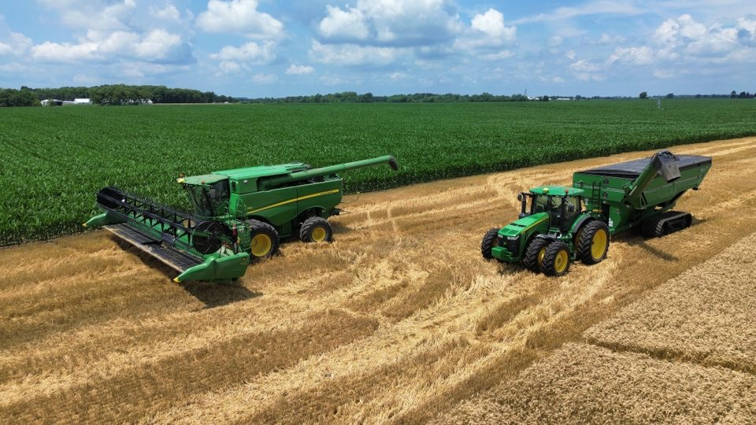

Project Overview
In agriculture soil samples are either taken as a part of a routine management plan or when some issue has been detected in an area which might be soil borne. The cost to take routine soil samples can be prohibtive and making an assumption of the nutrient levels and general soil properties can be worth the risk. The goal of this project is to develope models and methodology which would allow the prediction of common soil properties in an area with relatively few samples taken to train the models. This would allow land owners to have an approximation of their soil statistics and reduce the cost to gain this information as routine samples would not be needed, only samples to train the models on the given area.
Methods
Info Section
…your test paragraphs…
…another test paragraph…
Sampled Points
pH
Buffer pH Map
Organic Matter Map
Phosphorus Map
Potassium Map
Note on maps
Due to the limitations of Iowa State University's ArcGIS Online Permissions I was not able to share maps containing the raster layers of the modeled data in this format.
Why are Soils Important?
Soil is not just the medium used to grow plants but is the basis of all human life, the importance of soil in our water and nutrient cycles, as well as the service it provides in growing our food makes it one of the most valuable resources on the planet. Taking the time to understand the soil and how it can best be managed is crucial for the continuation of life on earth.